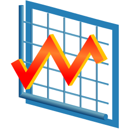
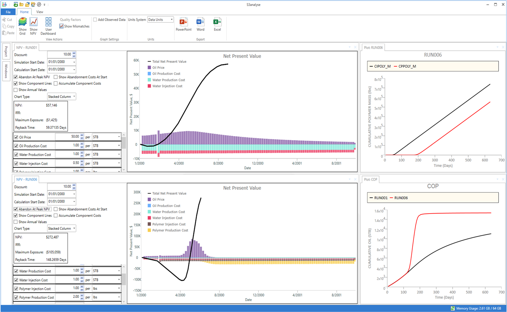

Fast
Multi-million cell models load in seconds, and hundreds of runs can be loaded and plotted together without leaving the application.

S3analyseS3analyse loads, visualises and compares reservoir simulation results from every major simulator — multi-million cell models and hundreds of runs, in one workspace.

Multi-million cell models load in seconds, and hundreds of runs can be loaded and plotted together without leaving the application.
Eclipse, Nexus, CMG, tNavigator, METEOR, UTCHEM and more — read natively, so cases from different simulators sit side by side in the same project.
Dashboards for common analysis tasks, one-click export to Office, and a Python API that can drive the whole application for batch processing.